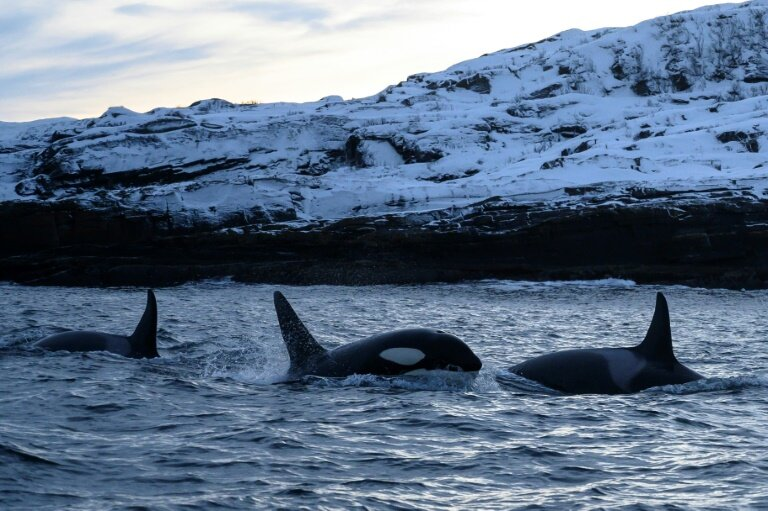

Orca
COMMON NAME: Orca (Killer Whale)
SCIENTIFIC NAME: Orcinus orca
TYPE: Mammals
DIET: Carnivore
GROUP NAME: Pod
AVERAGE LIFE SPAN IN THE WILD: 50 to 80 years
SIZE: 23 to 32 feet
WEIGHT: Up to 6 tons

These mega marine mammals have many hunting techniques, and bumping seals off ice is just one of them. Often referred to as ‘wolves of the sea’, killer whales live and hunt together in ‘pods’, or family groups, much like a pack of wolves.
Some males have been known to live into their 40s and perhaps up to 50+ years old. Females have been known to live to 60+ years old.
Orcas are carnivorous (meat-eating) predators. They primarily prey upon marine mammals such as seals, sea lions, and even whales - using their sharp teeth that can be four inches (ten centimeters) long. They are known to grab seals right off the ice. They also eat seabirds, fish, and squid.
COMMON NAME: Orca (Killer Whale)
SCIENTIFIC NAME: Orcinus orca
TYPE: Mammals
DIET: Carnivore
GROUP NAME: Pod
AVERAGE LIFE SPAN IN THE WILD: 50 to 80 years
SIZE: 23 to 32 feet
WEIGHT: Up to 6 tons
At present killer whales are not endangered. They have not been widely hunted by humans but are susceptible to some of the same threats as other marine mammals, including pollution, overfishing of their prey, and habitat infringement. They live an average of 30 to 50 years in the wild.